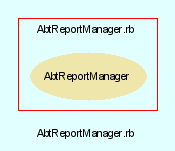

|  |
AbtReportManager.rb
AbtReportManager class handles all sort of report and query generation within the AbTLinux system.
Created by Eric D. Schabell <erics@abtlinux.org> Copyright 2006, GPL.
This file is part of AbTLinux.
AbTLinux is free software; you can redistribute it and/or modify it under the terms of the GNU General Public License as published by the Free Software Foundation; either version 2 of the License, or (at your option) any later version.
AbTLinux is distributed in the hope that it will be useful, but WITHOUT ANY WARRANTY; without even the implied warranty of MERCHANTABILITY or FITNESS FOR A PARTICULAR PURPOSE. See the GNU General Public License for more details.
You should have received a copy of the GNU General Public License along with AbTLinux; if not, write to the Free Software Foundation, Inc., 51 Franklin St, Fifth Floor, Boston, MA 02110-1301 USA
- generateHTMLPackageListing
- new
- searchPackageDescriptions
- showFileOwner
- showFrozenPackages
- showInstalledPackages
- showJournal
- showPackageDependencies
- showPackageDetails
- showPackageLog
- showQueue
- showUntrackedFiles
- showUpdates
Constructor for the AbtReportManager.
RETURN AbtReportManager - an initialized Report1Manager object.
[ show source ]
# File AbtReportManager.rb, line 42
42: def initialize
43: end
Generates an HTML page of installed packages from installed packages list.
RETURN void.
[ show source ]
# File AbtReportManager.rb, line 170
170: def generateHTMLPackageListing
171: end
Searches the installed package trees package descriptions for matching occurrances of the given search text.
PARAM String - a search text.
RETURN hash - a hash of the search results, keys are package names and values are matching descriptions.
[ show source ]
# File AbtReportManager.rb, line 138
138: def searchPackageDescriptions( searchText )
139: end
Display the name of the package(s) that own the given file.
PARAM String - a file name.
RETURN void.
[ show source ]
# File AbtReportManager.rb, line 126
126: def showFileOwner( file )
127: end
Display a list of the packages found in the frozen list.
RETURN void.
[ show source ]
# File AbtReportManager.rb, line 85
85: def showFrozenPackages
86: end
Display all packages installed and tracked by AbTLinux.
RETURN void.
[ show source ]
# File AbtReportManager.rb, line 61
61: def showInstalledPackages
62: end
Display the AbTLinux journal file.
RETURN void.
[ show source ]
# File AbtReportManager.rb, line 116
116: def showJournal
117: end
Provides access to dependency checking via the AbTLinux DepEngine. (This portal to the DepEngine will be expanded in apart sub-project, more details at a later date.)
PARAM String - Package name.
RETURN hash - Empty hash if no problems found, otherwise hash of problem files and their encountered errors.
[ show source ]
# File AbtReportManager.rb, line 98
98: def showPackageDependencies( package )
99: end
Display all data for a given package.
PARAM String - Package name.
RETURN boolean - True if completes without error, otherwise false.
[ show source ]
# File AbtReportManager.rb, line 53
53: def showPackageDetails( package )
54: end
Display the contents of the requested log for a given package. Possible log types are; install, build and integrity.
PARAM String - Package name.
PARAM String - log type.
RETURN void.
[ show source ]
# File AbtReportManager.rb, line 74
74: def showPackageLog( package, logType )
75: # install log
76: # build log
77: # integrity log
78: end
Displays the contents of the current queue based on the given queue.
PARAM String - the type of queue to display such as install queue.
RETURN void.
[ show source ]
# File AbtReportManager.rb, line 149
149: def showQueue( queueType )
150: end
Display all files not part of any installed AbTLinux package. This delivers a list of files that are not tracked by AbTLinux package management.
RETURN void.
[ show source ]
# File AbtReportManager.rb, line 108
108: def showUntrackedFiles
109: end
Reports available updates for a given package or package tree based on the current system.
PARAM String - the target of the update check, either a package name or a package tree name.
RETURN boolean - True if completes without error, otherwise false.
[ show source ]
# File AbtReportManager.rb, line 162
162: def showUpdates( target )
163: end